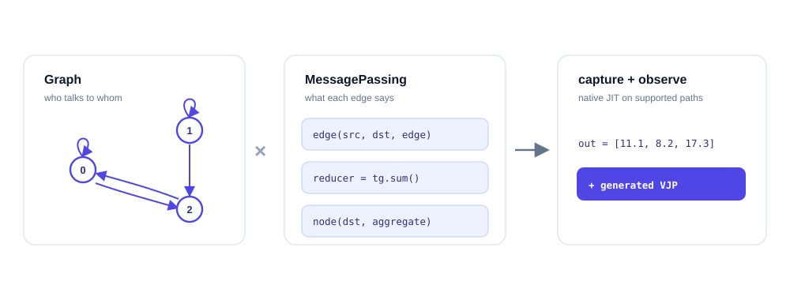

Graph message passing → compiled execution ↗图消息传递 → 编译执行 ↗tiga-lang Alpha
A differentiable JIT compiler for graph message passing, with relation-aware IR, fused message aggregation, and CPU / NVIDIA GPU execution.面向图消息传递的可微 JIT 编译器，保留图关系语义，实现消息计算与聚合融合，并支持 CPU / NVIDIA GPU 执行。